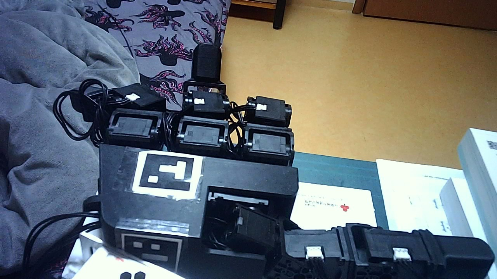

현재 약지 조정은 확인됐습니다. 회전 경로는27조건 중24조건만 통과해 차단했고, 빈손 준비와 정지 촬영만 허용합니다.
현재 약지 조정은 확인됐습니다. 회전 경로는27조건 중24조건만 통과해 차단했고, 빈손 준비와 정지 촬영만 허용합니다.
실물의 자연 배치, 파지, 5초 유지와 열기는 완료했다. 90도 회전과 회전 후 안정적인 재파지는 아직 완료하지 않았다.
기존 두 손가락 파지에 예전 경로를 바로 연결한 모델은 마지막 약30도에 그쳤다. 받침을 미리 세운 후보는 약65도까지 돌아갔다. 아래 숫자는 자유물체 모델의 계산 결과이며 실물 성공 수치가 아니다. 검사가 통과해도 90도 목표 달성 여부는 별도로 확인한다.
| 후보 | 마지막 회전 | 90도에 가장 가까운 구간 | 모델 안전 검사 |
|---|---|---|---|
| raised_cradle_160_yaw0 | 65.4° | 별도 기록 없음 | 통과 |
| raised_cradle_160_yaw256 | 60.4° | 별도 기록 없음 | 통과 |
| raised_cradle_96_yaw0 | -4.9° | 별도 기록 없음 | 통과 |
| raised_cradle_160_yaw0 | 65.4° | 66.6° | 통과 |
| raised_cradle_192_yaw0 | 0.0° | 0.0° | 탈락 |
| raised_cradle_208_yaw0 | -0.0° | -0.0° | 탈락 |
중간에 더 회전했다가 되돌아오는 구간이 있는지도 추적한다. 추가 회전 명령은 아직 배포하지 않았다.

16개 모터 응답과 토크 OFF를 읽기로 확인했다. 사용자가 조정한 ID15는 1756틱으로 동작 범위 안에 들어왔다. 세 번 읽은 자세 차이는 최대0틱이다. ID14도 함께 움직였으므로 현재 원본 각도를 다음 경로에 사용한다. 원본 각도는 저장하고 기존 동작 승인 검사는 유지했다.
떨어진 형상 두 쌍을 MuJoCo가 거리0으로 보고했다. 같은 CAD의 볼록 최적화와 분리축 검사로 양의 거리를 검증했다. 이 보정은 연구용 경로 계산에만 적용하며 충돌 형상이나 모터 각도, 구동력 제한을 바꾸지 않았다. 이 오류만으로 실제 큐브 회전 실패의 원인을 확정하지 않는다.
독립 거리 검증 / 결과와 원본 파일 / 완료한 파지의 실물 사진 / MuJoCo 공식 저장소의 유사 증상 보고